Table of Contents
- Demo 2.0 Intro to VFM Step-by-step
- Bitcoin Script
- Forth-like & stack based
- Reverse polish
- Concatenative:
scriptPubKey&scriptSig - Sintetic example
- Typical use: Pay to public key hash (P2PKH)
- Что еще надо?
- И немножко взад!
- Considered Harmful
- Conditions (1/2)
- Conditions (2/2)
- Else (1/2)
- Else (2/2)
- BEGIN - UNTIL (1/2)
- BEGIN - UNTIL (2/2)
- BEGIN - WHILE - REPEAT (1/2)
- BEGIN - WHILE - REPEAT (2/2)
- Mission complete!
- Inter-Process Communication (IPC)
- VFM as process (1/2)
- VFM as process (2/2)
- VFM isolation
- VFM frontend
- Node storage
- Node context
- Контракт G-нод (1/3)
- Контракт G-нод (2/3)
- Контракт G-нод (3/3)
- Планы на будущее
- The end
- Sources
Demo 2.0 Intro to VFM Step-by-step
Доклад будет техническим. Слабонервных просим удалиться :)
- Как Forth работает в Bitcoin
- Чего не хватает
- Базовые элементы компиляции
- Inter-Process-Communication
- Storage
- Контракт G-нод
Bitcoin Script
- Forth-like
- Stack-based
- Reverce-polish
- Concatenative
- Turing incomplete
Forth-like & stack based
2 3 OP_ADD 5 OP_EQUAL
- ☑ Forth-like
- ☑ Stack-based
- ? Reverce-polish
- Concatenative
- Turing incomplete
Reverse polish
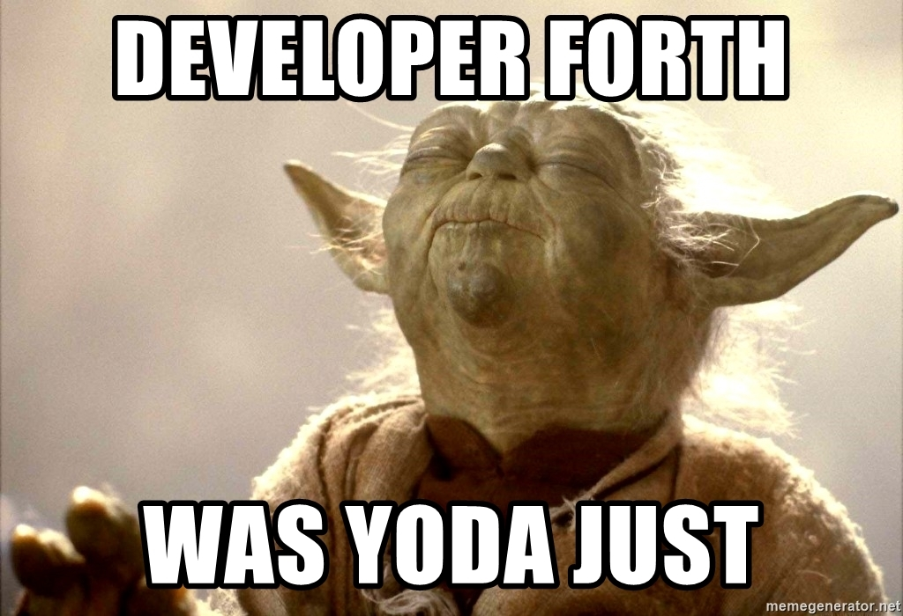
Concatenative: scriptPubKey & scriptSig
scriptPubKeyзаписывается в предшествующую транзакцию и определяет условия.scriptSigзаписывается в будущую транзакцию и должен их удовлетворить
Чтобы проверить транзакцию, выполняется результат конкатенации scriptSig +
scriptPubKey. Если выполнение завершено успешно, транзакция действительна.
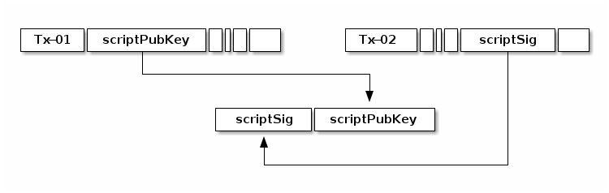
Concatenative!
Sintetic example
scriptPubK(в предшествующей транзакции):
OP_MUL 370 OP_EQUAL
ScriptSig(в в последующей транзакции):
10 37
Получившаяся программа:
10 37 OP_MUL 370 OP_EQUAL
Typical use: Pay to public key hash (P2PKH)
- Alice владеет
PrivKey->PubK->Addr-> и Боб узнает этотAddr - Bob посылает транзакцию на
Addrс кодом внутриscriptPubK, таким, чтобы только тот, кто владеет приватным ключом для адресаAddr, мог потратить этот выход
Когда Alice создает следующую транзакцию, она должна записать в scriptSig:
- подпись своей транзакции
Sigприватным ключомPrivKey. - публичный ключ
PubK
Путем конкатенации программа станет такой:
<Sig> <PubK> DUP HASH160 <Addr> EQUALVERIFY CHECKSIG
Что еще надо?
- ☑ Forth-like
- ☑ Stack-based
- ☑ Reverce-polish
- ☑ Concatenative
- Turing incomplete
Conditionals on Bitcoin Script:
2 3 OP_ADD 5 OP_EQUAL OP_IF OP_RETURN OP_ENDIF ...
Только вперед!
И немножко взад!
- Чтобы ходить назад, нам нужны адреса
10 LOOP: DUP PRINT 1 - DUP 0 != 0BRANCH LOOP ...
Considered Harmful

Conditions (1/2)
Условное выражение вида:
... condition IF true-part-1 true-part-2 ... THEN rest-1 rest-1 ...
Conditions (2/2)
компилируется в:
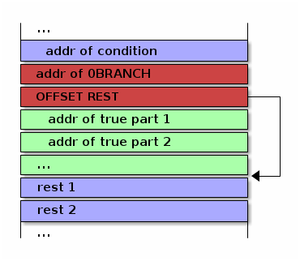
... condition 0BRANCH OFFSET-REST true-part-1 true-part-2 ... rest-1 rest-2 ...
где OFFSET-REST - это смещение до rest
Else (1/2)
Более сложное условное выражение вида:
... condition IF true-part-1 true-part-2 ... ELSE false-part-1 false-part-2 ... THEN rest-1 rest-2 ...
Else (2/2)
компилируется в:
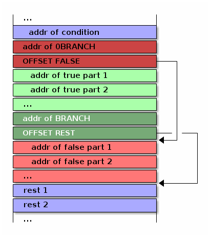
BEGIN - UNTIL (1/2)
Цикл с постусловием
BEGIN loop-part-1 loop-part-2 ... condition UNTIL
BEGIN - UNTIL (2/2)
компилируется в:
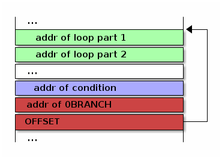
Или, в текстовой нотации:
loop-part-1 loop-part-2 condition 0BRANCH OFFSET
BEGIN - WHILE - REPEAT (1/2)
Это цикл с предусловием.
BEGIN condition WHILE loop-part-1 loop-part-2 ... REPEAT rest-1 rest-1
BEGIN - WHILE - REPEAT (2/2)
компилируется в:
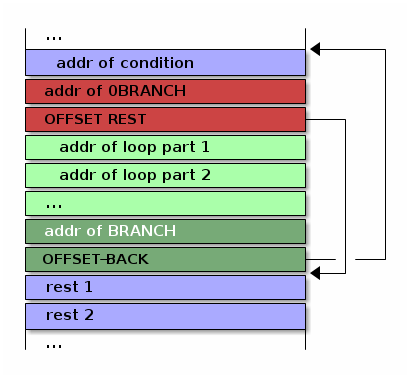
Или в текстовой нотации:
condition 0BRANCH OFFSET-REST loop-part-1 loop-part-1 BRANCH OFFSET-BACK rest-1 rest1
Mission complete!
- ☑ Forth-like
- ☑ Stack-based
- ☑ Reverce-polish
- ☑ Concatenative
- ☑ Turing (in)complete
Написано. Работает. Покрыто тестами.
Inter-Process Communication (IPC)
VFM as process (1/2)
No network. No protocol. No bugs.
- Base Operation System Platform Communication Stack:
- Standart Input
- Standart Output
- Environment
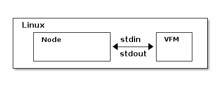
VFM as process (2/2)
- Optional:
- FileIO
- Signal
- Unix Sockets
- Berkley Sockets
- Message queue
- Pipe/Named pipe
- Shared memory
- Message passing
- Memory-mapped files
VFM isolation
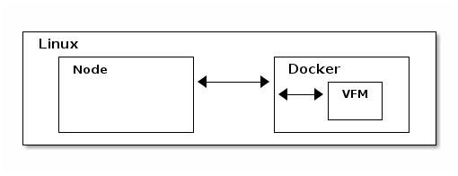
VFM frontend
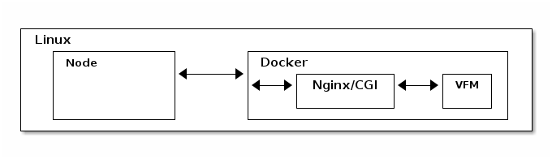 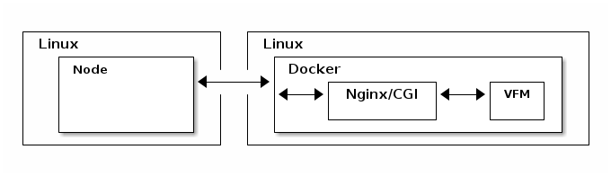
Node storage
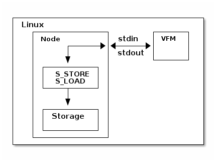
Node context
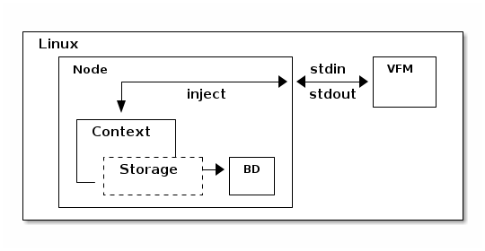
Контракт G-нод (1/3)
- Мы храним список текущих G-нод в storage смарт-контракта
- Если там пусто, значит контракт запущен в первый раз, надо положить туда захардкоженный список первых нод.
Мы хотим узнать, если ли данные в хранилище, и если их нет, то сохранить этот захардкоженный список. Для этого мы реализуем процедуру, которая:
- отправит команду ноде, чтобы узнать, сколько элементов сохранено по ключу
- получит ответ
- распарсит его
- если ответ не является числом - отправит ноде вызов процедуры обработки ошибки
- иначе: сравнит его с нулем
- если он равен нулю, то отправит команду на запись по ключу.
Контракт G-нод (2/3)
: ENSURE-G-NODES \ Request count of g-nodes-list from storage ." ᚜length ᚜gethash «g-nodes-list» storage᚛᚛" CR \ Read and parsing response WORD NUMBER 0= IF \ Number is ok, parsing success 0= IF \ Number is 0, set base-g-nodes as default g-nodes-list ." ᚜prog1 1 ᚜setf ᚜gethash «g-nodes-list» storage᚛ " BASE-G-NODES ." ᚛᚛" CR WORD 2DROP \ Read and drop response THEN \ GOTO EXIT ELSE \ Wrong number DROP \ Drop bad parsing number ." ᚜smart-contract-error «wrong-node-result-number»᚛" CR THEN ;
Контракт G-нод (3/3)
На стороне ноды я реализовал:
- запуск VFM
- передачу параметров командной строки и параметров, передаваемых в окружении (SENDER, AMOUNT)
- получение и отправку сообщений
- выполнение полученных инжектов внутри контекста
Осталось не реализованным:
- Сохранение контекста в БД (тривиально)
Таким образом, контракт умеет:
- запускаться нодой
- получать параметры в окружении и командной строке
- получать и исполнять команды от ноды
- возвращать ноде значения
- инжектировать в контекст ноды команды, которые нода умеет исполнять, изменяя storage
Планы на будущее
Ближайшая перспектива:
- Спроектировать и реализовать полный цикл работы с G-нодами на смарт-контрактах
- Реализовать плату за операции
- Сделать откат и сохранение контекста в БД
- Реализовать другие базовые смарт-контакты
Отдаленная перспектива:
- Написать компилятор высокоуровневого языка в Forth-код
- Написать полнофункциональную ноду
- Написать отладочный монитор
The end
Sources
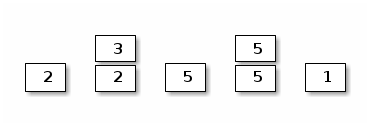
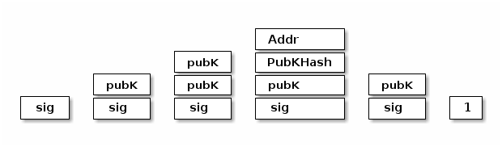
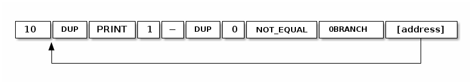